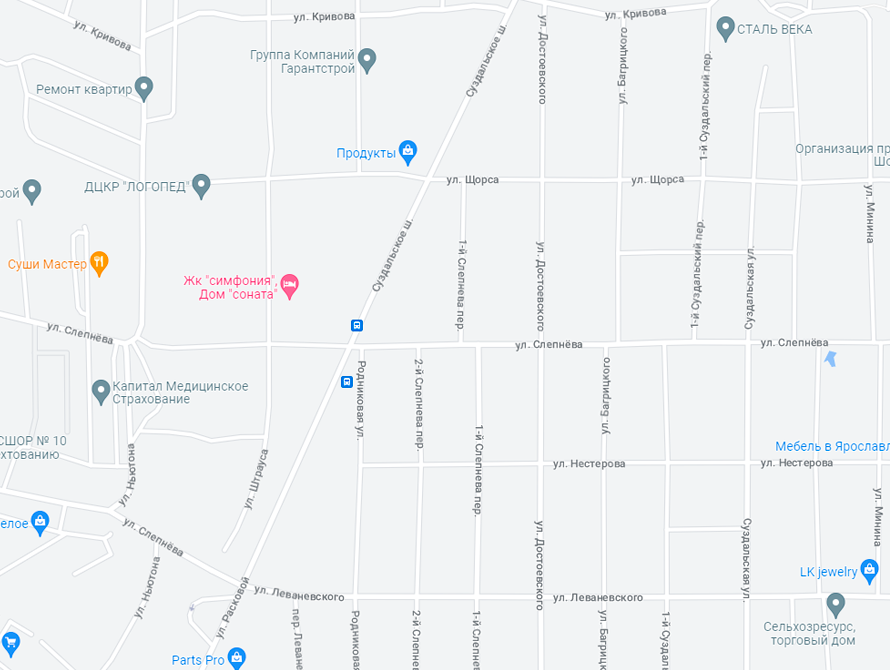
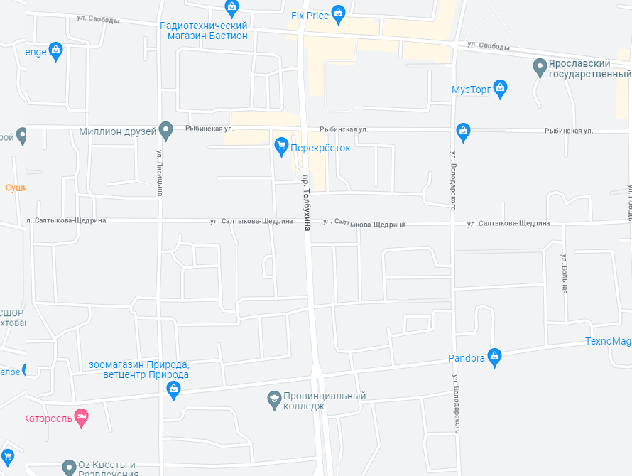
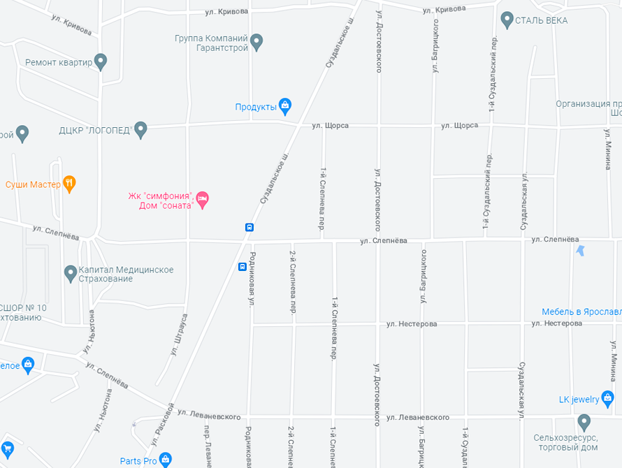
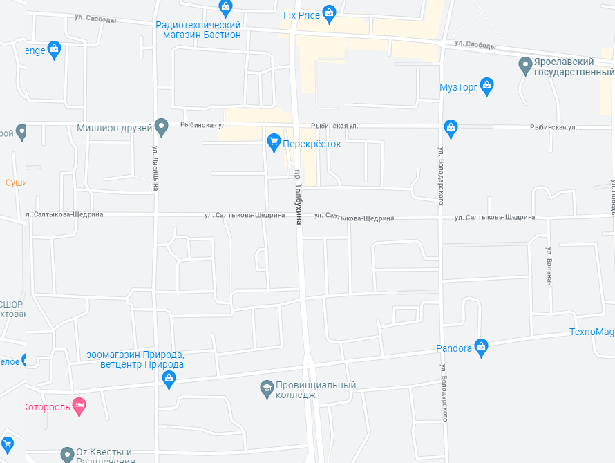

ЯГТУ
Нефтяник
Около ЯГТУ
Суздалка
Центр
Бутовкий парк

ЯГТУ
Нефтяник
Около ЯГТУ
Суздалка
Центр
Бутовкий парк
Привет! Перед тобой графический редактор для рисования маршрутов на карте. Для рисования можно использовать несколько инструментов:
1) Кисть - думаю, что тут все понятно
2) Линия - при выборе этого инструмента, необходимо задать 2 точки, по которым построится прямая линия
3) Ломаная линия - работает как обычная линия, но по пути несколько раз "ломается". Это можно использовать для имитации отклонений во время прохождения маршрута (ведь не всегда человек идет ровно по прямой линии) или для имитации неточности геолокации (она тоже не всегда работает точно). В общем, тут все тоже довольно просто - тыкай 2 точки, а остальное за тебя сделает программа
Теперь про функционал кнопок:
кнопка отмены предыдущего действия. Допустим, нарисовать линию точно не получилось, тогда тыкни на эту кнопку, и линия удалится
тут все просто, кнопка нужна для полной очистки карты от всех маршрутов
Выбрать локацию - редактор позволяет работать с несколькими заготовленными картами. Эта кнопка позволяет выбрать, на какой локации необходимо построить маршрут.
Скачать карту - пояснения не требуются (надеюсь)
Приятного пользования сервисом! Для большего удобства рекомендую использовать компуктер, но это не обязательно